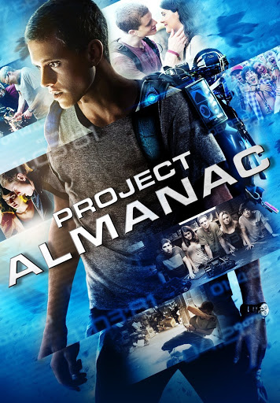

Interestelar
![Portada de [Interestelar]](assets/img/Interestelar.jpg)
"Interestelar" narra las aventuras de un grupo de exploradores que hacen uso de un agujero de gusano recientemente descubierto para superar las limitaciones de los viajes espaciales humanos y poder vencer las grandes distancias de un viaje interestelar. El elenco que incluye a Matthew McConaughey, la ganadora del Oscar Anne Hathaway y la nominada a los premios de la Academia Jessica Chastain.
- Director: [Christopher Nolan]
- Año: [2014]
- Género: [Ciencia Ficción,Aventura, Drama]
- Duración: [169 min]
Tráiler
Tema Principal
Proyecto Almanac
No te pierdas el último tráiler de Project Almanac, protagonizada por Jonny Weston, Sofia Black D’Elia y Amy Landecker. Un brillante estudiante de instituto y sus amigos descubren un misterioso dispositivo con un potencial ilimitado pero que pondrá sus vidas en riesgo.
- Director: [Dean Israelite]
- Año: [2015]
- Género: [Ciencia Ficción,Aventura,Metraje Econtrado]
- Duración: [106 min]
Tráiler
Tema Principal
kimetsu no yaiba castillo infinito
![Portada de [Título]](assets/img/Demon-Slayer-Infinity-Castle-Poster.jpg.jpg)
Cuidado por dónde pisas 🔥 Con las canciones oficiales de las legendarias artistas Aimer y LiSA, Demon Slayer: Kimetsu no Yaiba Castillo Infinito se estrena este 11 de septiembre, solo en cines.⚔️
- Director: [Haruo Sotozaki]
- Año: [2025]
- Género: [Anime,Fantasia oscura,Acción,Aventura]
- Duración: [160 min]
Tráiler
Tema Principal
Shrek
![Portada de [Título]](assets/img/Shrek.webp)
Shrek es una película animada estadounidense de 2001, dirigida por el neozelandés Andrew Adamson y la estadounidense Vicky Jenson. La cinta cuenta con las voces de Mike Myers, Cameron Diaz, Eddie Murphy y John Lithgow, entre otros. Está basada en el libro titulado Shrek!, de William Steig (1990). La película ganó el Óscar a la mejor película animada y participó en la selección oficial del Festival de Cine de Cannes de 2001. Forma parte del AFI's 10 Top 10 en la categoría películas de animación. En 2020, fue seleccionada para su preservación en el National Film Registry de la Biblioteca del Congreso de los Estados Unidos Esta película estuvo inspirada con el luchador francés, Maurice Tillet Basada en Shrek! de William Steig Estreno Mexico El 29 de junio de 2001 y Su Secuelas de Shrek del Shrek 2 (2004) y Shrek Tercero (2006) y Shrek 4: Shrek Para Siempre (2010) 2021 DreamWorks Animation LLC. inc Todos los Derechos Reservados
- Director: [Andrew Adamson y Vicky Jenson]
- Año: [2001]
- Género: [Animación,Comedia,Aventura,Fantasia]
- Duración: [90 min]
Tráiler
Tema Principal
Titanic
![Portada de [Título]](assets/img/Titanic.jpg)
Con la excusa de los 100 años del hundimiento del transatlántico, 20th Century Fox volverá a traer a las salas a la galardonada Titanic en 3D: el apasionado romance que mantiene Rose con Jack, un pasajero de 3ª Clase que también viajaba en el famoso buque. Rose nos cuenta con detalle el impacto con el iceberg y el hundimiento del barco, prestando especial atención al modo cómo lo vivieron los protagonistas de esta romántica historia.
- Director: [James Cameron]
- Año: [1997]
- Género: [Romance,Drama,Catastrofe,Aventura Histórica]
- Duración: [195 min]